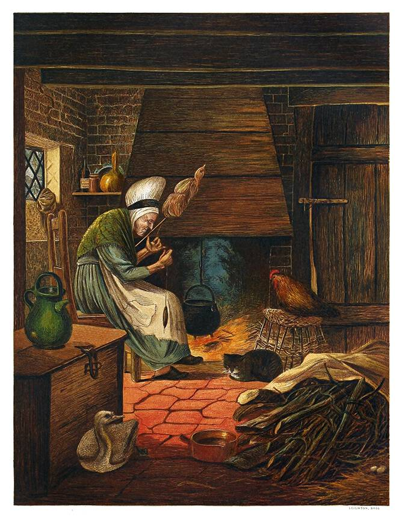

Icona de Llop en ruta relativa superior a 'Exercicis HTML-CSS'
Canal de Dalto en ruta absoluta a internet
Anar a la pàgina Llistes en ruta absoluta al mateix projecte">
Icona d'imatge amb ruta relativa inferior a la caprtea 'img'